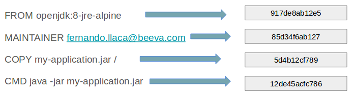

@NandoLlaca

writing Dockerfiles
Hello!
Fernando Llaca / @nandollaca
Software Engineer at BEEVA
Goal
In 40 minutes you will be a black belt in...
- Docker Basics
- Dockerfile writing
- Logs, Security and
Configuration in SpringBoot + Docker - Useful Tools
Docker
Docker Layers
Dockerfile Writing
FROM ?javaopenjdk:8-jre-alpine
FROM openjdk:8-jre-alpine
COPY my-application.jar \
/usr/share/app/my-app.jar
FROM openjdk:8-jre-alpine
COPY my-application.jar \
/usr/share/app/my-app.jar
CMD java -jar
/usr/share/app/my-app.jar
Well, let's be clear
FROM openjdk:8-jre-alpine
ENV APP_DIR /usr/share/app
COPY my-application.jar \
$APP_DIR/my-app.jar
CMD java -jar
$APP_DIR/my-app.jar
Security
FROM openjdk:8-jre-alpine
ENV APP_DIR /usr/share/app
[...]
FROM openjdk:8-jre-alpine
ENV APP_DIR /usr/share/app
RUN adduser -D java
[...]
FROM openjdk:8-jre-alpine
ENV APP_DIR /usr/share/app
RUN adduser -D java
RUN mkdir -p $APP_DIR && \
chown -R java $APP_DIR
[...]
FROM openjdk:8-jre-alpine
ENV APP_DIR /usr/share/app
RUN adduser -D java
RUN mkdir -p $APP_DIR && \
chown -R java $APP_DIR
USER java
[...]
Security
- Use a non-root user
- Give him privileges
- Prepare to run as read-only
- Static Image Scan:
TwistLock / Docker Cloud
Configuration
Configuration
Configuration: three approaches
- Environment Variables
- Spring Cloud Config
- Mounted Volumes
Configuration: Environment Vars
# application.yml
eureka:
client:
healthcheck:
enabled: true
serviceUrl:
defaultZone: "${DISCOVERY_SERVER}"
Configuration: Environment Vars
docker run --detach \
-e "DISCOVERY_SERVER=http://eureka.test:8000/eureka" \
my-app:latest
Configuration: Spring Cloud Config
# bootstrap.yml
spring:
application:
name: "my-awesome-service"
cloud:
config:
failFast: true
uri: "http://config-server:8888"
Configuration: Using Volumes
docker run --detach \
-v /host/path/to/config:/container/conf/path \
my-app:latest
Logging
Logging
- Log to stdout
- Log to a mounted volume
- Use Docker log drivers
- Spring Cloud Sleuth
Logging to stdout
# application.yml
logging:
level:
com.netflix.discovery: 'OFF'
com.codedpoetry: 'DEBUG'
pattern:
console: "%d{yyyy-MM-dd HH:mm:ss}..."
Logging to a mounted volume
# Dockerfile
[...]
ENV LOGS_DIR /var/log/my-app
VOLUME $LOGS_DIR
ENV LOGGING_FILE $LOGS_DIR/my-app.log
[...]
Spring Cloud Sleuth

Other stuff...
Expose Ports
ENV SERVER_PORT 8080
EXPOSE $SERVER_PORT
Docker Entrypoint
# Add an entrypoint
COPY docker-entrypoint.sh /
RUN chmod u+x /docker-entrypoint.sh &&\
chown java /docker-entrypoint.sh
ENTRYPOINT ["/docker-entrypoint.sh"]
Java Options Environment Var
ENV JAVA_OPTIONS ""
[...]
# Command to execute!!
CMD ["java","${JAVA_OPTIONS}","-jar",\
"${APP_DIR}/${JAR_NAME}.jar"]
Recap
Oh, God... I'm lost since the Sheldon slide...
Final Dockerfile
FROM openjdk:8-jre-alpine
ENV APP_DIR /usr/share/app
ENV LOG_DIR /var/log/app
# Create an execution user
RUN adduser -D java
# Create directories for logs and for
# our java binaries
RUN mkdir -p $LOGS_DIR $APP_DIR && \
chown -R java $LOGS_DIR $APP_DIR
# Specify that Logs dir can be mounted
VOLUME $LOGS_DIR
# Exposed Ports
ENV SERVER_PORT 8080
EXPOSE $SERVER_PORT
# Add an entrypoint
COPY docker-entrypoint.sh /
RUN chmod u+x /docker-entrypoint.sh && \
chown java /docker-entrypoint.sh
ENTRYPOINT ["/docker-entrypoint.sh"]
# All the remaining actions will be
# performed as user "java"
USER java
# Add generated binaries
ENV JAR_NAME \
@project.artifactId@-@project.version@
COPY $JAR_NAME.jar $APP_DIR/
# Command to execute!!
CMD ["java","${JAVA_OPTIONS}","-jar", \
"${APP_DIR}/${JAR_NAME}.jar"]
So...
- Choose well (or build) your base Docker image
- The order of the layers is important
- Run your containers safely (read-only, non-root user)
- If possible, aggregate configuration and logs
- Limit resources consumption
Some nice tools
- Spotify's Dockerfile Maven plugin
- Docker Compose
THE END
- Thanks! Any question?
-
@NandoLlaca (http://codedpoetry.com)